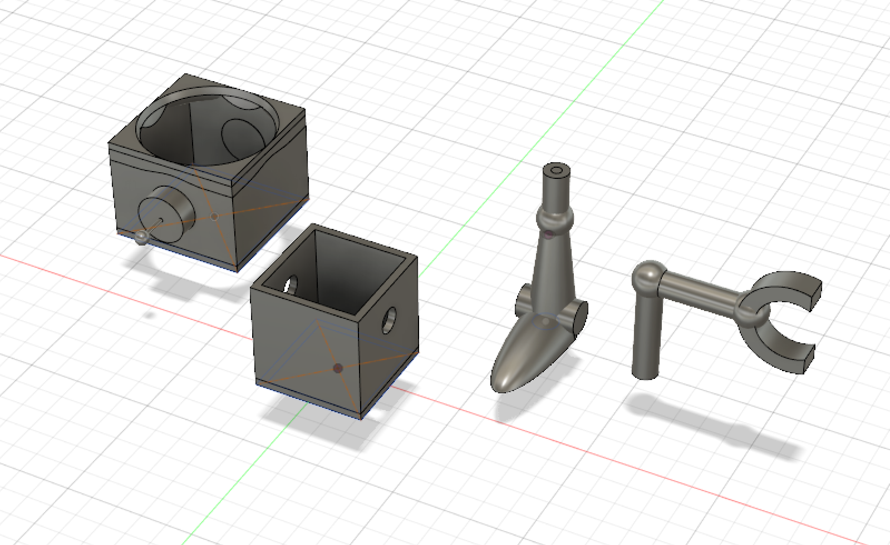
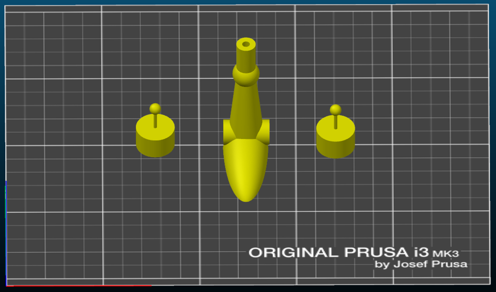

Robot Jones Model
I did this project to improve on my CAD design skills, and made it a challenge for myself to model each piece in a way so it would need no support structures when 3d printed. It is based off the robot main character in the tv show 'Whatever Happened to Robot Jones?'
Below is a screenshot from Fusion 360 of all the finalized models of each part.
I wanted to make the robot light up like I did with my Iron Giant model, and to be as authentic as possible I used an actual light bulb just like he has in the show.

I then measured with a digital caliper the dimensions I needed to make the body to hold the base of the light bulb and modeled a prototype box using the rectangle sketch. I sketched two different sized squares with the same center point and clicked in between them and extruded up to make the walls of the box, then selected both sketches and extruded up a little to make the bottom of the box.
The printed box fit perfect as seen in the second image, so I got to modeling the legs next. I used a combination of the built in shapes and sketching and extruding, and made it hollow in the middle to fit the wires through. Once I printed and verified the wires fit I then modified the body to have holes that line up with the legs for the wires to go through, and holes on the side for the arms.


The arm I designed to be the same thickness as the legs, and also made in a way so it wouldn't need support material when printing. I separated the upper and lower arm and modeled the hand so it could print standing up, the reverse of how it's standing in the first image below.


Then came modeling the most challenging part, the head. To do so I measured the diameter of the largest and thinnest diameter of the bulb and sketched circles one above the other extruded it into a half hyperboloid to match the bottom half of the bulb.
After that I made a closed box similar to how I made the body to the correct size I needed to fit the bulb, and cut the half hyperboloid from the top lid. For the bottom lid I cut out a body sized hole so it would fit in snug.
This presented the challenge of how I could print it without support material. To solve this I extruded and filleted some overhangs underneath the top lid as shown in the second image below.


The final piece, the ear antenna was easy enough to model I was able to use the included cylinder and sphere shapes. The challenge though was printing it as the antenna was too thin to print correctly as it kept printing layer after layer too quick for the last layer to cool properly.
To solve this I put the leg model in between them so when it was printing the layer for the leg it gave the antenna for each ear over 10 seconds to cool down in between.
